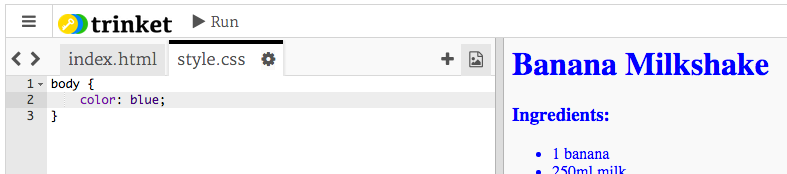

Для створення списку інгредієнтів ви побудуєте ненумерований список за допомогою тегу <ul>. Перейдіть до 8-го рядка шаблону і додайте цей код HTML, замінивши текст всередині тегу <h1> назвою власного рецепту:
Тепер вам лише треба додати елементи до нового нумерованого списку:
<li>Очистити банан і додати в блендер</li>
screenshot
Зверніть увагу, що елементи списку нумеруються автоматично!
Завдання: Більше кроків
Можете додати усі кроки для приготування вашої страви?
screenshot
Збережіть свій проект
Крок 4: Кольори!
Давайте додамо трохи кольору до веб-сторінки вашого рецепту.
Завдання для виконання
Ви вже знаєте, як додавати на сторінку кольоровий текст. Додайте цей код до свого файлу style.css, щоб пофарбувати весь текст у body в синій:
body {
color: blue;
}

screenshot
Ваш веб-переглядач знає такі кольори, як blue (синій), yellow (жовтий) та навіть lightgreen (салатовий). Та чи знаєте ви, що насправді він знає назви більше 500 різних кольорів?
Ось список назв усіх кольорів, якими ви можете скористатись: jumpto.cc/web-colours. Серед них є такі кольори, як tomato (томатний), firebrick (цегловий) та peachpuff (персиковий).
Змініть колір тексту з blue (синього) на tomato (томатний).
screenshot
Ваш веб-переглядач знає назви 140 кольорів. Однак насправді він розрізняє більше 16 мільйонів кольорів за їх кодовими позначеннями!
Як ви, мабуть, знаєте, будь-який колір можна створити шляхом поєднання основних кольорів: червоного, зеленого та синього. Щоб пояснити веб-переглядачу, який колір показувати, вам лишень треба вказати, наскільки насиченим має бути кожен з основних кольорів.
Потрібна насиченість червоного, зеленого та синього вказується числом від 0 до 255. rgb — абревіатура з перших букв англійських назв червоного (red), зеленого (green) та синього (blue) кольорів.
screenshot
Додайте цей код до CSS для тіла веб-сторінки, щоб зробити тло світло-жовтим:
background: rgb(250,250,210);
screenshot
Пояснити веб-переглядачу, який колір показувати, також можна за допомогою шістнадцяткового коду (скорочено англійською "hex code"). Він працює так само, як і згаданий вище код rgb(), тільки шістнадцяткові коди завжди мають починатись #, а для позначення насиченості червоного, зеленого та синього в них використовуються шістнадцяткові "цифри" від 00 до ff.
screenshot
Замініть код rgb() у своїх CSS цим шістнадцятковим кодом:
background: background: #fafad2;
screenshot
Ви маєте побачити таке ж світло-жовте тло, як і раніше!
Збережіть свій проект
Крок 5: Завершальні штрихи
Давайте додамо трохи більше HTML та CSS, щоб покращити вашу веб-сторінку.
Завдання для виконання
Можете додати горизонтальну лінію в кінці свого рецепту за допомогою тегу <hr>.
<hr>
screenshot
Зверніть увагу, що цей тег не має закриваючого тегу. Як і тег <img>.
Лінія, яку ви щойно додали, не поєднується з оформленням решти вашої веб-сторінки. Давайте виправимо це, додавши трохи коду CSS: